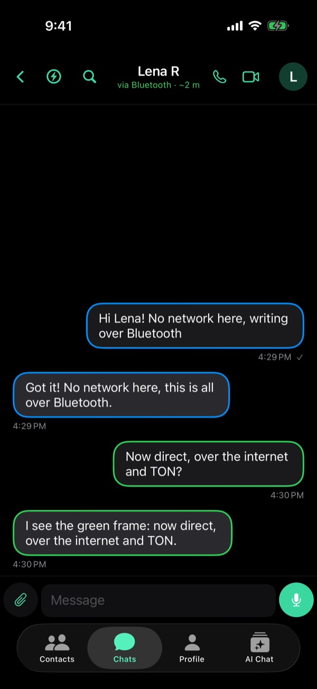

Viper 1.5.23
Viper now works with no internet at all when the person you're talking to is nearby.
Updated for Viper 1.5.34 (November 19, 2026)
What changed since this post. Where the post and the app differ, the app is right.
- Bluetooth links now ask first (since 1.5.29): the other phone shows Allow or Decline.
- Erase All Data clears this device only; the accounts stay on the relay. Use Delete Account to remove one from the relay.
- Files over Bluetooth today: up to 8 MB, up to 1 GB when Wi-Fi can join in.


- Bluetooth works from the very first launch, even with no internet: create an account offline and people nearby can see you and chat with you right away.
- See how many meters away people nearby are — in the People Nearby list and at the top of a Bluetooth chat. Rather not share yours? Turn off "Show My Distance" in Settings.
- Files, voice messages and video messages over Bluetooth. Transfers no longer break: if you walk out of range, lock the screen or the app is closed, the file picks up where it stopped instead of starting over, and it only counts as delivered once it has been checked and saved on the other phone.
- Much faster nearby transfers over Wi-Fi peer-to-peer — no Wi-Fi network or internet needed, the Wi-Fi radio just has to be on. If Wi-Fi isn't available, the file goes over Bluetooth straight away.
- Turn Wi-Fi on in the middle of a Bluetooth transfer and the file speeds up on its own — no need to reopen the chat.
- Bluetooth chat stays connected with the screen locked and recovers from interference on its own.
- Files you receive nearby now open with a tap.
- A more reliable connection on first launch and after reinstalling: Viper connects right away and keeps trying on its own if the network isn't ready yet.
- New in Settings: Erase All Data removes every account, message, contact and file from this device.
- Works together with Viper 1.5.20: chat as before, and files to people on the older version go through the relay.
Viper asks for Local Network access the first time it sends a file over Wi-Fi.
Text: the App Store “What's New” for Viper 1.5.23, released September 14, 2026. Screenshots: Viper 1.5.34 with sample data. All release notes